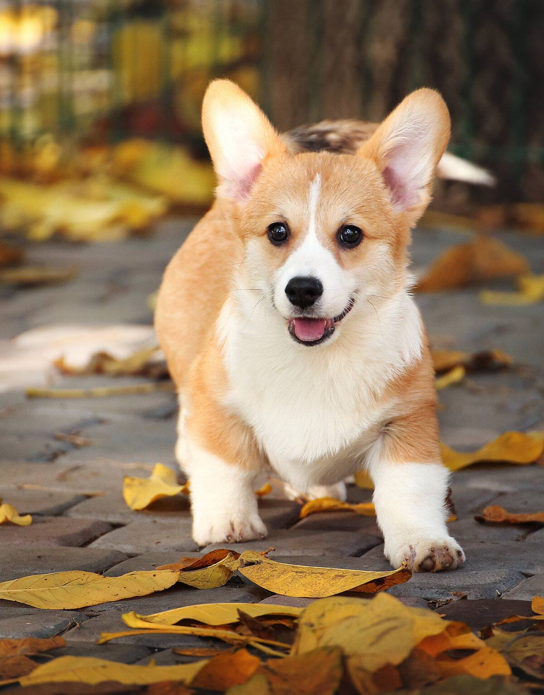

Корги
Вельш-ко́рги — породы пастушьих собак, происходящие из Уэльса. К уэльским корги относятся: Вельш-корги-кардиган (англ. Welsh Corgi Cardigan) — порода, появившаяся на изолированной территории Кардиганшира. Согласно наиболее популярной версии, предки вельш-корги-кардиганов были завезены кельтами при освоении территории Британских островов в конце бронзового века. Первое упоминание породы в письменных источниках датируется X веком.

Мои компетенции
Керри Бигль
Шпиц Папильон
Басенджи
Услуги
- Проработка игровых интерфейсов и анимации
- Подготовка логотипа, гайдлайнов бренда и иконок
- Подготовка интерфейсов для продуктов, связанных с виртуальной реальностью
- Интерфейсы для интернет-магазинов, порталов новостей, интернет-сервисов, аналитических платформ
- Разработка UX/UL дизайна
- Создадим яркую дизайн концепцию для любого продукта или сервиса
- Умные посадочные страницы спроектированные по передовому подходу SEO Driven
- Шаблоны для социальных сетей, презентаций и генеративный фирменный стиль
Интересный факт
Кому могут не нравиться корги? Эти очаровательные собачки дружелюбны, энергичны и полны забавностей. От своих симпатичных «булочек», которые вдохновили на появление отдельного стиля выпечки, до своего разговорчивого характера, корги занимают особое место в сердцах любителей домашних животных.